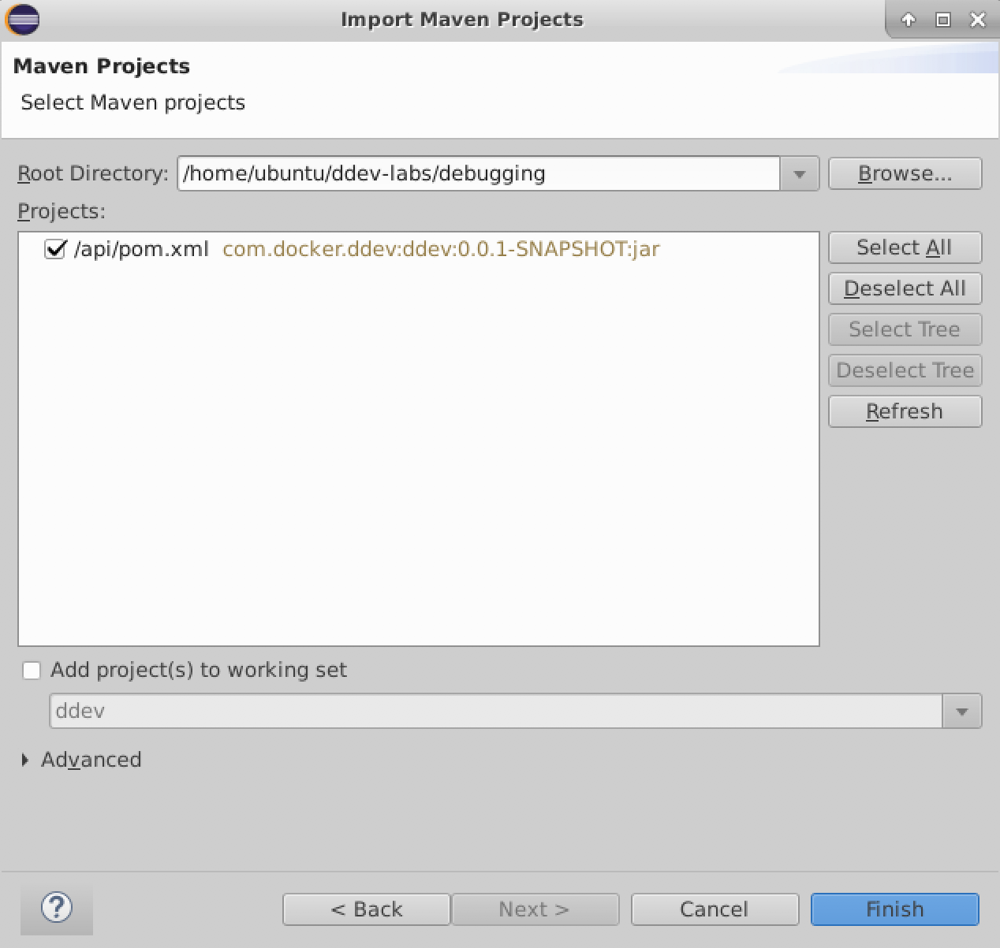
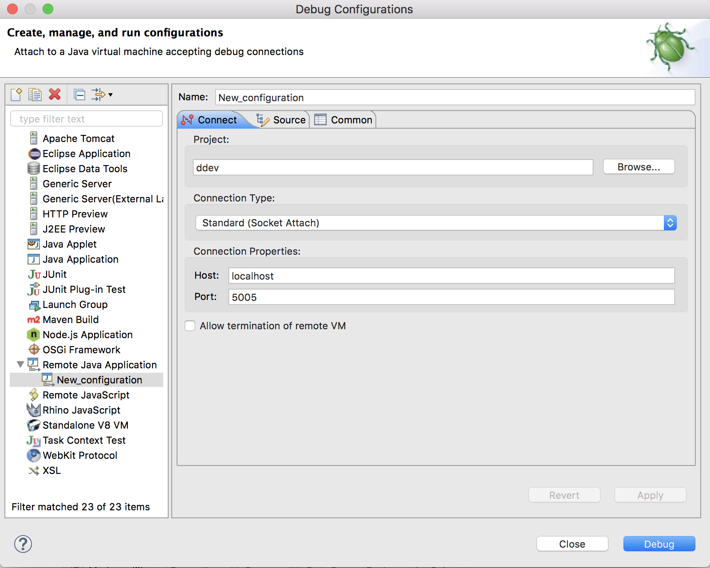
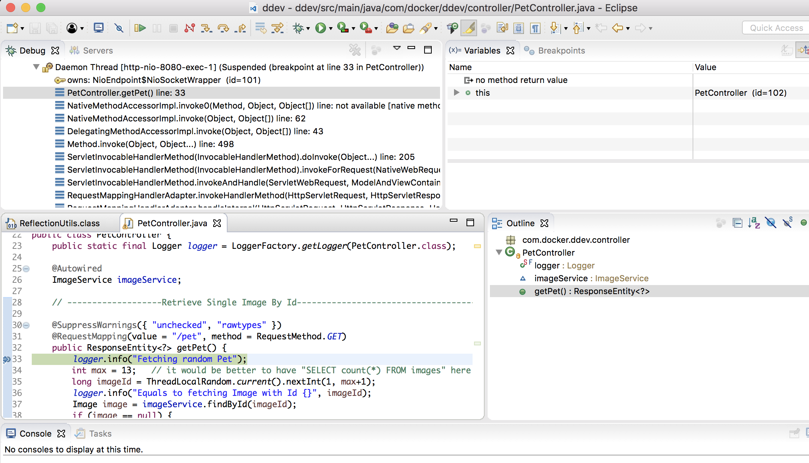

Debugging in a Container
In this exercise we are going to explore how applications can be debugged line by line even when running in a container.
The project folder for this exercise is ~/ddev-labs/debugging.
Note this exercise relies on an IDE (Eclipse); to use this on infra, you'll need to connect to the remote desktop on that node; see instructions for this in the Remote Desktop appendix of this exercise book.
Debug the Java API
For this you need an IDE capable of remote debugging Java applications. In this sample we'll use Eclipse.
Eclipse is pre-installed on your remote desktop; if you'd like to try this exercise on your own machine and don't already have Eclipse, download it from https://www.eclipse.org/downloads/ and install it.
Run the application with:
ubuntu@infra:~/ddev-labs/debugging$ docker-compose \ -f docker-compose-api.yml up --buildNote how we're using the
docker-compose-api.ymlfile to describe the app which in turn usesapi/Dockerfile-devto build the API image. This Dockerfile contains a specialENTRYPOINTto configure Java and SpringBoot for debugging:ENTRYPOINT ["java", \ "-agentlib:jdwp=transport=dt_socket,server=y,suspend=y,address=5005","-jar", \ "/app/ddev-0.0.1-SNAPSHOT.jar"]Open Eclipse, and import the Java/Maven project: select File->Import and then select Maven->Existing Maven Project and hit Next.
In the "Import Maven Projects" dialog box navigate to the folder
~/ddev-labs/debuggingand click OK. Make sure the project/api/pom.xmlis selected and click Finish./
Note: If you still see the empty "Welcome" screen of Eclipse, close it by clicking the dismiss button of that screen.
Create a new Debug configuration by selecting Run-->Debug Configurations.... In the dialog box Debug Configurations, select Remote Java Application and click the New launch configuration button (white rectangular icon with a tiny yellow + above the list containing Remote Java Application) to create such a new configuration.
Fill in the fields as follows:
/
Click Apply and then Debug. Notice in the terminal how the Java application gets initialized. You should see something along the line of this (shortened for brevity):
apiserver_1 | apiserver_1 | . ____ _ __ _ _ apiserver_1 | /\\ / ___'_ __ _ _(_)_ __ __ _ \ \ \ \ apiserver_1 | ( ( )\___ | '_ | '_| | '_ \/ _` | \ \ \ \ apiserver_1 | \\/ ___)| |_)| | | | | || (_| | ) ) ) ) apiserver_1 | ' |____| .__|_| |_|_| |_\__, | / / / / apiserver_1 | =========|_|==============|___/=/_/_/_/ apiserver_1 | :: Spring Boot :: (v1.5.3.RELEASE) apiserver_1 | apiserver_1 | 2017-07-06 20:34:05.836 INFO 1 --- [ main] com.docker.ddev.DdevApp : Starting DdevApp v0.0.1-SNAPSHOT on 7d34254bb968 with PID 1 (/app/ddev-0.0.1-SNAPSHOT.jar started by root in /app) apiserver_1 | 2017-07-06 20:34:05.847 INFO 1 --- [ main] com.docker.ddev.DdevApp : The following profiles are active: postgres ... apiserver_1 | 2017-07-06 20:34:22.005 INFO 1 --- [ main] o.s.j.e.a.AnnotationMBeanExporter : Registering beans for JMX exposure on startup apiserver_1 | 2017-07-06 20:34:22.007 INFO 1 --- [ main] o.s.j.e.a.AnnotationMBeanExporter : Bean with name 'dataSource' has been autodetected for JMX exposure apiserver_1 | 2017-07-06 20:34:22.016 INFO 1 --- [ main] o.s.j.e.a.AnnotationMBeanExporter : Located MBean 'dataSource': registering with JMX server as MBean [com.zaxxer.hikari:name=dataSource,type=HikariDataSource] apiserver_1 | 2017-07-06 20:34:22.164 INFO 1 --- [ main] s.b.c.e.t.TomcatEmbeddedServletContainer : Tomcat started on port(s): 8080 (http) apiserver_1 | 2017-07-06 20:34:22.180 INFO 1 --- [ main] com.docker.ddev.DdevApp : Started DdevApp in 17.466 seconds (JVM running for 27.352)- Navigate Window -> Show View -> Navigator.
- Set a breakpoint in the class
api/src/main/java/com/docker/ddev/controller/PetController.javaat the linelogger.info("Fetching random Pet");by doubleclicking on the corresponding line number.
In a terminal window use
curlto target the endpoint/api/pet:ubuntu@infra:~$ curl localhost:8080/api/petNotice how the breakpoint in Eclipse is hit and we're able to debug the code line by line now. (You may be asked to open a new view in Eclipse - go ahead and click Yes, and it'll take you to the debug terminal).
/
When done exit the application from your terminal with
CTRL+Cand remove it with:ubuntu@infra:~/ddev-labs/debugging$ docker-compose -f docker-compose.debug.yml down
Conclusion
In this lab we have demonstrated line by line debugging of code running in a container. For this lab we have used Eclipse, but other IDEs such as Visual Studio 2015/2017, IntellJ or PyCharm offer similar possibilities.